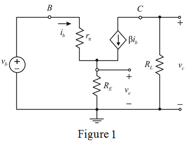

Consider the following circuit diagram:

From Figure 1, write the expression for the collector voltage.
From Figure 1, write the expression for the emitter voltage.
Apply Kirchhoff’s voltage law at the input side of Figure 1.
Calculate the ratio of collector voltage to the base voltage.
Thus, the collector to the emitter voltage ratio is .
Calculate the ratio of emitter voltage to the base voltage.
Thus, the emitter to base voltage ratio is .